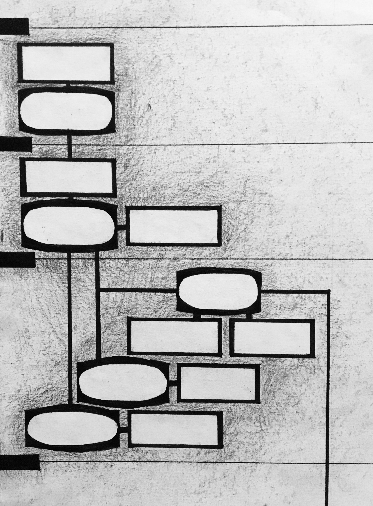

related
| m i c r o h i s t o r i e s |  |
According to Charle's Joyner's definition from Shared Traditions: Southern History and Folk Culture - microhistories aspire to "[ask] large questions in small places". The label of a "microhistory" seemed applicable to this project, since I am looking into the conversations sparked by one babe.net story, and through those conversations, seek to ask bigger questions about consent, "bad dates", and what does and does not constitute sexual harrassment.
photograph of Carlo Ginzburg by Claude Truong-Ngoc |
| k i a l i o |
The site Kialo claims to be a "debate platform powered by reason" that makes it easy to "engage in focused discussion". After poking around the website, I must say I believe it has the potential to achieve that goal. The site presents a central argument, and users can add "pro" or "con" claims to that argument, each of which can branch off with their own "pro" and "con" claims. The network of claims relating to a central topic are visualized through each discussion's discussion topology infographic and argument tree.
interpretive drawing of kialo discussion topology infographic |
| t i m e l i n e s |  |
On October 21st, the Washinton Post published The Cascade of Missteps that Turned One White House Error into a Messy Week, an article written by Phillip Bump that details what the Trump administration did and did not do after four U.S. special forces were killed in Niger on October 4, 2017. The article included a timeline that diagramed the events that occurred after the incident alongside the statements concurrently made by Trump and members of his administration. A direct link to the timeline image can be found here.
interpretive drawing of washington post article timeline diagram |